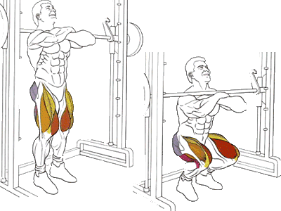

Это упражнение аналогично предыдущему, однако другое расположение штанги смещает акцент с ягодичных мышц на квадрицепс.
Техника выполнения такая же как у приседания со штангой, меняется только положение грифа.
Исходное положение:
Хват прямой, руки расположены немного шире плеч.
Согнутые руки подняты так, чтобы верхние их части стали параллельны полу.
Гриф лежит на передней части плеч.
Техника выполнения:
Движение начинается не с колен, а с отведения таза назад. Вообразите, что ваша задача – присесть на стул.
Приседать нужно до параллели задней поверхности бедра с полом, но можно и ниже.
Вставать из приседа нужно плавно, без рывков и ни в коем случае не переносить центр тяжести на носки.
Рекомендации:
Колени остаются неподвижны, они ни в коем случае не выходят за носки. В противном случае не избежать травм коленных суставов.
Чем глубже присед, тем больше задействуется ягодичная мышца. Но если цель спортсмена – тренировка четырехглавой мышцы бедра, достаточно присесть до прямого угла.
В верхней точке ноги не выпрямляются полностью, колено до конца подхода слегка согнуто – так снижается риск его травм.
Выполняя это упражнения, не берите свой максимальный вес. Слишком большое отягощение нагружает преимущественно ягодичные мышцы.